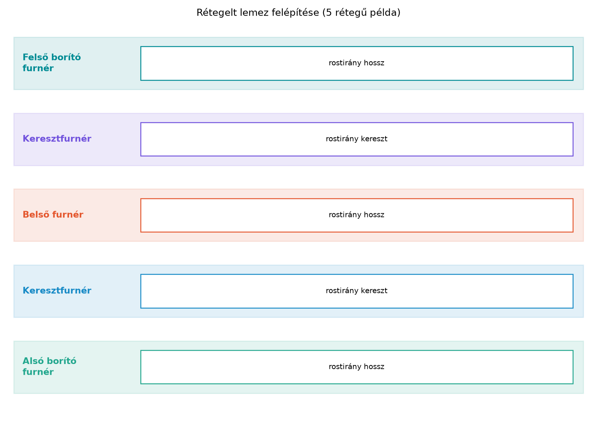

A vevő konyhabútort rendel. A szekrénytestet forgácslapból tervezed, de a fiókfenék, a hátfal és a polcok anyagát külön kell kiválasztanod. A rétegelt lemez vékony, mégis merev; a lécbetétes bútorlap könnyű, és jól tartja a csavart; a táblásított lap tömörfa hatású. Ha rosszul választasz, a polc belóg, a csavar kiszakad, vagy az ajtó vetemedik. Ebben az alfejezetben megtanulod, hogyan épül fel ez a három laptípus, miben erős és miben gyenge, és hogyan válassz közülük ajtóhoz, polchoz vagy asztallaphoz.
Képzeld el, hogy három különböző lapot vágsz ketté a műhelyben. A rétegelt lemez metszete vékony, váltakozó irányú rétegeket mutat, mint egy réteges torta. A lécbetétes bútorlap metszete középen párhuzamos, vastagabb léceket, a két oldalán pedig vékony borító furnért mutat. A táblásított lap metszete keskeny, hosszú léceket mutat, amelyeket ragasztással illesztettek egymáshoz. A rétegelt lemez felépítését a következő rétegábra szemlélteti.

A diagramon jól látszik a keresztirányú rétegezés: minden szomszédos furnérréteg rostiránya 90°-kal elfordul. Ez a szerkezet adja a lap méretstabilitását.
Definíció. A rétegelt lemez olyan faalapú lap, amelyet páratlan számú, egymásra merőleges rostirányú furnérrétegből ragasztanak össze. A felépítés a középső rétegre nézve szimmetrikus.
Definíció. A lécbetétes bútorlap olyan faalapú lap, amelynek középrétege párhuzamos, egymáshoz ragasztott falécekből áll, borítórétege pedig vékony furnér vagy rétegelt lemez.
Definíció. A ragasztott tömörfa lap – gyakori nevén táblásított lap – olyan tömörfa lap, amelyet keskeny, hosszú lamellákból ragasztanak össze. A lamellák hosszirányú toldása leggyakrabban ékcsapos (fogazott) toldással készül, a szélességi illesztés pedig a lamellák keskeny oldalának (élének) ragasztásával.
Szabály. A három laptípus közös jellemzője, hogy a faanyagot kisebb elemekre bontják, majd ragasztással újra nagyobb táblává építik. Ez csökkenti a vetemedést, és lehetővé teszi a kisebb méretű alapanyag jobb kihasználását.
A rétegelt lemez (szokásos műhelyi nevén rétegelt falemez) rétegszáma mindig páratlan: például 3, 5, 7, 9 vagy annál több réteg. A páratlan rétegszám és a szimmetrikus felépítés együtt adja a síkban maradást. Ha a rétegszám páros lenne, vagy a felépítés nem lenne szimmetrikus, a lap könnyebben vetemedne.
A borító furnérrétegek minősége határozza meg a látható felületet. A belső rétegek gyengébb minőségű furnérok is lehetnek, ha azok a készterméken nem látszanak. A furnérokról a Furnérok: gyártás, fajták és felhasználás alfejezetben tanultál részletesen.
A rétegelt lemez ragasztóanyaga szerint beltéri vagy kültéri változatot különböztetünk meg. A beltéri rétegelt lemez ragasztója korlátozott nedvességtűrésű; a kültéri változat vízálló ragasztással készül, például fenol-formaldehid alapú ragasztóval (ellenőrizendő: a gyártói adatlap és a hatályos szabvány szerinti pontos ragasztóosztály). A kültéri jelölés nem azt jelenti, hogy a lapot állandóan szabadban, lefedés nélkül lehet tárolni, hanem azt, hogy a ragasztás ellenáll az időszakos nedvességnek.
A formarétegelt elemek olyan hajlított rétegelt lemezek, amelyeket sablonon, présben hajlítanak meg. A keresztirányú rétegezés lehetővé teszi, hogy a lap íves, hajlított formát kapjon, és megtartsa azt. Ilyen elemeket például hajlított székülésekhez, íves bútorfrontokhoz használnak.
Továbbvitt eredmény. A rétegelt lemez méretstabilitását és rétegfelépítését a Forgácslap, MDF, HDF, OSB, farostlemez és bevont lapok alfejezetben hasonlítjuk össze az agglomerált lapokkal; a lapválasztás szempontjait a lapszerkezetű termékek gyártásánál, a szabásnál és a szekrények tervezésénél használjuk.
Mindhárom lap rétegvastagságainak összege 18 mm (rétegelt lemez: ; bútorlap: ; tájékoztató felépítések). A HTML-változatban a rétegszám-csúszkával (3–9) kipróbálhatod, hogy a rétegelt lemeznél csak a páratlan rétegszám ad szimmetrikus felépítést.
A lécbetétes bútorlap (műhelyi nevén gyakran bútorlap) középrétege párhuzamos, keskeny falécekből áll. A lécek szélessége jellemzően 20–30 mm körüli (tájékoztató érték, gyártónként eltérő). A lécek rostiránya hosszirányban fut, és a léceket egymáshoz ragasztják. A középrétegre mindkét oldalról borítóréteget ragasztanak, amely lehet vékony furnér vagy rétegelt lemez. A borítórétegek rostiránya általában merőleges a középréteg léceinek rostirányára. Ez a keresztezett felépítés adja a bútorlap jó méretstabilitását.
A lécbetétes bútorlap csavartartása kiemelkedő: a középrétegben lévő lécek megtartják a becsavarozott csavart, ezért a bútorlap jól használható olyan helyeken, ahol vasalatokkal kötnek, vagy ahol a csavar terhelést kap. A lap könnyű a tömörfa laphoz képest, mert a középréteg fenyő vagy más könnyű faanyag is lehet (ellenőrizendő: a gyártói adatlap szerinti fafaj).
A bútorlap élén látszanak a lécek végei és a borítórétegek, ezért a látható éleket általában élzárással kell ellátni. Az élzárás lehet vékony furnér, élfólia vagy tömörfa élbetét.
A táblásított lap kizárólag tömörfából készül. A gyártás során a fűrészárut először lamellákra vágják, azaz keskeny, hosszú lécekre. A lamellák szélessége jellemzően 40–80 mm (tájékoztató érték, ellenőrizendő). A hosszirányú ékcsapos toldás (fogazott toldás) segítségével a rövid darabokat hosszú lamellává ragasztják. Az ékcsapos toldásnál a faanyagot ék alakú fogazással illesztik, így a ragasztási felület nagyobb, és a toldás szilárd.
Ezután a hosszú lamellákat élükön (keskeny oldalukon) egymáshoz ragasztják, amíg el nem érik a kívánt lapszélességet. A lamellák száliránya azonos irányban fut, ezért a táblásított lap megjelenése nagyon hasonlít a tömör fa laphoz. A gyakorlatban a lamellák szín és szálrajzolat szerint válogatottak, hogy a felület egységes legyen.
A táblásított lap előnye, hogy a kisebb méretű, hibamentes fűrészáru is jól hasznosítható. A lap méretstabilitása jobb, mint a tömör deszkáé, mert a keskeny lamellák zsugorodása és dagadása egyenletesebben oszlik el. A táblásított lap éle tömörfa, de a lamellák illesztési vonalai látszanak. Ha a látható felületen nem kívánatosak a toldások, a lapot furnérozzák vagy élzárással látják el.
A három laptípus tulajdonságait a következőképpen foglalhatjuk össze:
| Tulajdonság | Rétegelt lemez | Lécbetétes bútorlap | Táblásított lap |
|---|---|---|---|
| Felépítés | páratlan furnérréteg, rostirány váltakozik | lécközép + borítóréteg | tömörfa lamellák, ékcsapos toldás |
| Méretstabilitás | kiváló | jó | jó |
| Csavartartás | közepes-jó | kiváló | jó |
| Tömeg | közepes | kis-közepes | nagyobb |
| Élzárás igénye | mindig | mindig | gyakran |
| Tömörfa érzet | csak felületi furnérral | csak borítóréteggel | teljes vastagságban |
| Tipikus felhasználás | fiókfenék, hátfal, hajlított elem | polc, bútortest, asztallap | asztallap, munkalap, tömörfa bútor |
| Nedvességtűrés (beltéri/kültéri) | változó, jelöléstől függ | elsősorban beltéri | elsősorban beltéri, kültéri kezeléssel |
A táblázatban szereplő értékek tájékoztató jellegűek, és gyártónként, fafajtól és ragasztótól függően eltérhetnek (ellenőrizendő: a termék műszaki adatlapja).
Megjegyzés. A rétegelt lemez és a lécbetétes bútorlap élén mindig látszik a szerkezet, ezért élzárás nélkül csak rejtett, takart helyen használható. A táblásított lap éle tömörfa, de az illesztési vonalak miatt általában ezt is élzárják vagy profilozzák.
A választásnál három szempontot mérlegelj: mekkora terhelés éri, látható-e a felület, és milyen nedvességnek van kitéve.
Számítás. Egy asztallap mérete 1200 mm hosszú, 600 mm széles és 20 mm vastag legyen, táblásított lapból. A lamellák szélességét 75 mm-re választjuk. Kérdés: hány lamella szükséges?
Adott: lapszélesség ; lamellaszélesség .
Képlet: .
Behelyettesítve: .
Ellenőrzés: , tehát pontosan 8 darab 75 mm széles, 1200 mm hosszú lamella kell. Ha a lamella hossza rövidebb, mint 1200 mm, ékcsapos toldással toldjuk, így a darabszám nő.
A szükséges folyóméter: lamella. Ez a mennyiség a szabásjegyzékben a megmunkálási ráhagyás nélkül értendő. ∎
Számítás. Egy 2500 mm × 1250 mm-es rétegelt lemez táblából hány darab 600 mm × 400 mm-es polc szabható, ha a fűrészvágás szélessége (vágási rés) 4 mm?
Adott: tábla szélessége 1250 mm, hossza 2500 mm; polc mérete 600 × 400 mm; vágási rés 4 mm.
Először számoljuk a polcok számát a szélesség mentén: 1250 mm / (400 + 4) = 1250 / 404 ≈ 3,09, tehát 3 sor. Hossz mentén: 2500 / (600 + 4) = 2500 / 604 ≈ 4,14, tehát 4 oszlop. Összesen: 3 × 4 = 12 db polc. A maradék anyag a széleken selejt vagy más alkatrészre használható. Ez a számítás a szabásterv készítésének alapja, amelyet a Szabásterv és szabástérkép, anyagkihozatal alfejezetben tárgyalunk részletesen. ∎
Szabvány. A rétegelt lemezek, lécbetétes bútorlapok és táblásított lapok beltéri/kültéri alkalmazási osztályát, ragasztóanyag-típusát, nedvességtűrését és formaldehid-kibocsátási osztályát a hatályos MSZ EN szabványsorozat szerint kell megadni és jelölni (ellenőrizendő: a pontos szabványszámok, az osztályok jelei és a határértékek a mindenkori szabványkiadás szerint). A termék műszaki adatlapján és a csomagoláson ellenőrizd a beltéri/kültéri jelölést, a rétegszámot, a ragasztóosztályt és a formaldehid-osztályt (ellenőrizendő: az aktuális EU-szabályozás szerinti formaldehid-kibocsátási határértékek).
Szabványcsaládok (mind ellenőrizendő: szám, kiadás, hatály): rétegelt lemez követelményei és felhasználási osztályai – MSZ EN 636 (1 száraz, 2 párás, 3 kültéri feltételek); ragasztási minőség – MSZ EN 314 sorozat; felületi osztályozás – MSZ EN 635; tömörfa lapok (táblásított lap, egy- és többrétegű) – MSZ EN 13353; építési célú faalapú lapok, CE, formaldehid-osztály – MSZ EN 13986.
A formaldehid-kibocsátás azért fontos, mert a formaldehid egészségkárosító anyag lehet, és a beltéri levegőbe kerülhet (ellenőrizendő: a hatályos egészségügyi és kémiai biztonsági előírások). A lapgyártók ezért adnak meg kibocsátási osztályt, például alacsony kibocsátású kategóriát (jelölve, ellenőrizendő).
A beérkező faalapú lapokat a tárolás és a felhasználás előtt ellenőrizni kell:
Hiba: a rétegelt lemez rétegei felválnak a szélén. Oka lehet rossz ragasztás, nedvesség behatolása vagy túl erős fűrészszerszám okozta élroncsolódás. Helyes gyakorlat: kültéri nedvességhez vízálló ragasztású lapot válassz, és az élt élzárással védd.
Hiba: a lécbetétes bútorlap középső lécei átütnek a borítórétegen. Oka lehet túl vékony borítóréteg vagy erős csiszolás, amely átvágja a borítót. Helyes gyakorlat: a megfelelő vastagságú borítóréteggel ellátott lapot válassz, és a felület csiszolásánál tartsd meg a ráhagyást.
Hiba: a táblásított asztallap meggörbül. Oka lehet a nem megfelelő tárolás, az egyoldalú nedvességfelvétel vagy a lamellák hibás kiosztása. Helyes gyakorlat: a lapot vízszintesen, alátámasztva tárold, és a felületkezelést mindkét oldalon egyformán végezd.
Hiba: a csavar kiszakad a rétegelt lemez élén. Oka, hogy a rétegelt lemez élébe nagy átmérőjű csavart fúrnak, ahol a rétegek elválnak. Helyes gyakorlat: az élre merőlegesen ne csavarozz, hanem használj élzárást, vagy fúrj elő, és alkalmazz tiplit vagy más kötőelemet.
Egy asztalos beépített gardróbszekrényt készít. A belső polcokhoz lécbetétes bútorlapot választ, mert a polcok 800 mm hosszúak, könyveket kell tartaniuk, és a csavarok a polctartó vasalatokat fogják. A bútorlap könnyű, méretstabil, és a csavarok jól tartanak benne. A szekrény hátfalához 4 mm vastag rétegelt lemezt használ, mert a hátfalnak nem kell nagy terhelést viselnie, viszont merevíti a szekrénytestet. Az íves felső elemet formarétegelt lemezből rendeli, mert az gyárilag hajlított, és nem kell a műhelyben hajlítással kísérletezni. A vevőnek látható, tömörfa hatású asztallapot táblásított tölgyfából készíti, amelyet többrétegű olajjal kezel. A helyes lapválasztás miatt a termék stabil, könnyen szerelhető, és a vevő elégedett.
Válaszolj a kérdésekre röviden, magadban vagy füzetben.
1. feladat (A)
Határozd meg röviden, mi a különbség a lécbetétes bútorlap és a
táblásított lap között!
2. feladat (A)
Egy rétegelt lemez 5 rétegű. Sorold fel a rétegek rostirányát kívülről
befelé haladva!
3. feladat (B)
Egy asztallap mérete 1500 mm × 750 mm × 20 mm, táblásított lapból. A
lamellák szélessége 90 mm. Hány darab, legalább 1500 mm hosszú lamella
szükséges? (A szélességi illesztéshez nem kell ráhagyást számolni, mert
a lamellákat pontosan szélességre vágják.)
4. feladat (B)
Válassz lapot egy 1200 mm × 600 mm-es, 18 mm vastag szekrényajtóhoz,
amelyre lapos zsanérokat csavaroznak. Indokold a választást, és mondd
meg, milyen élzárást alkalmazz!
5. feladat (C)
Egy rétegelt lemez tábla 2440 mm × 1220 mm. Hány darab 610 mm × 305
mm-es polc szabható belőle, ha a vágási rés 3 mm? Számítsd ki a
kihozatalt is: a polcok területe osztva a tábla területével, százalékban
kifejezve!
6. feladat (D)
Készíts anyaglistát egy 1200 mm × 600 mm × 20 mm-es táblásított
asztallaphoz 75 mm széles lamellákból. Add meg a lamellák számát,
folyóméterét, és becsüld meg a szükséges ragasztó mennyiségét, ha a
fajlagos felhordás 150 g/m² és a ragasztandó felület a lamellák keskeny
oldala (éle), figyelembe véve, hogy az illesztések száma 7 (kétoldali
ragasztás). A számítás egyszerűsített: minden illesztési felület 1,2 m ×
0,02 m. (A ragasztó anyagszükségletét a gyártói adatlap szerint
ellenőrizd; ez a példa a számítás menetét mutatja.)
Önellenőrzés – válaszok
1. feladat
A lécbetétes bútorlap középrétege párhuzamos lécekből áll, erre
kétoldalt borítóréteget ragasztanak. A táblásított lap teljes
vastagságában tömörfa lamellákból áll, hosszirányban ékcsapos toldással,
szélességben a lamellák élére (keskeny oldalára) történő
ragasztással.
2. feladat
Kívülről befelé: felső borító furnér (rostirány hossz), keresztfurnér
(rostirány kereszt), belső furnér (rostirány hossz), keresztfurnér
(rostirány kereszt), alsó borító furnér (rostirány hossz). A felépítés
szimmetrikus.
3. feladat
Adott: lapszélesség
;
lamellaszélesség
.
Képlet:
Mivel egész lamellák kellenek, felfelé kerekítünk:
darab.
Ellenőrzés:
,
tehát az utolsó lamellát 60 mm szélesre kell vágni. A hossz 1500 mm, így
9 darab 1500 mm hosszú lamella szükséges. ∎
4. feladat
Lécbetétes bútorlap jó választás, mert jó a csavartartása, ami a
zsanérok rögzítésénél fontos. A bútorlap könnyű és méretstabil, ezért az
ajtó nem vetemedik. Az éleket élfóliával vagy vékony furnér élzárással
kell ellátni, mert a bútorlap élén látszanak a lécek. Ha a felület
tömörfa hatású legyen, táblásított lap is választható, de akkor a
csavarokhoz előfúrás javasolt.
5. feladat
Szélesség mentén:
,
tehát 3 sor.
Hossz mentén:
,
tehát 3 oszlop.
Összesen:
db polc.
Tábla területe:
.
Polcok területe:
.
Kihozatal:
.
A kihozatal viszonylag alacsony, mert a méretek nem osztói a
táblaméretnek, és a vágási rés is csökkenti a hasznos területet. ∎
6. feladat
Lamellák száma a szélességben:
db.
Minden lamella hossza 1200 mm = 1,2 m.
Folyóméter:
.
Illesztések száma:
illesztési felület.
Egy illesztési felület területe:
.
Összes illesztési felület (kétoldali ragasztás):
.
Ragasztó szükséglet:
,
tehát
.
A gyakorlatban ehhez hozzá kell adni a felületi veszteséget és a
kiöntött ragasztó maradékát, ezért legalább 10–20% ráhagyással
számoljunk (ellenőrizendő: a gyártói adatlap szerinti fajlagos felhordás
és veszteség). Az anyaglistában szerepeljen: 8 db lamella 75 × 20 × 1200
mm, 9,6 fm, ragasztó kb. 60 g. ∎
A rétegelt lemez páratlan számú, egymásra merőleges rostirányú furnérrétegből készül. A páratlan rétegszám és a szimmetrikus felépítés adja a kiváló méretstabilitást. A lécbetétes bútorlap középrétege párhuzamos lécekből áll, borítórétegei vékony furnérok vagy rétegelt lemezek; kiemelkedő csavartartású, és jól használható polchoz, bútortesthez. A táblásított lap tömörfa lamellákból készül, hosszirányban gyakran ékcsapos toldással; tömörfa hatást ad, és asztallapnak, munkalapnak alkalmas. A rétegelt lemez és a bútorlap élét mindig élzárni kell, ha látható; a táblásított lap élét is gyakran élzárják vagy profilozzák. Továbbvitt eredmény: a rétegelt lemez, a lécbetétes bútorlap és a táblásított lap méretstabilitási és megmunkálási jellemzőit a Forgácslap, MDF, HDF, OSB, farostlemez és bevont lapok alfejezetben hasonlítjuk össze az agglomerált lapokkal; a lapválasztás szempontjait a lapszerkezetű termékek szabásánál és a szekrények tervezésénél használjuk.